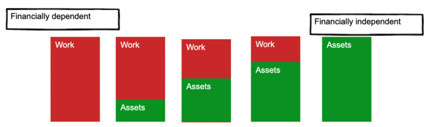

Financial freedom · Part 1
Chapter 3: The different levels of financial freedom
Financial freedom is a spectrum—with exciting opportunities along the way
There are different levels of financial freedom.
As your wealth increases, you proceed to the next level. And with each new level, you enjoy greater flexibility with your job, your time, and your lifestyle.
What each level of financial freedom looks like
To illustrate this point, look at the chart below:

As you can see, you make money from:
-
a job; or
-
an asset.
As you increase your assets, you decrease your need for a job—until, eventually, you no longer need to work.
Although most people think of this last column as "financially independent", I would argue that each column represents a level of financial freedom.
To see why, look back at the middle column. In this column, your investments cover half your expenses.
Once you've reached this midpoint, your world opens up in many exciting ways.
You can:
-
Scale back your current job, working only half-time. (Your investments will cover the other half.)
-
Find a different, lower-paying job you love. (While your new job covers expenses, your investments will continue to grow, and likely double in ~10 years—enough for you to be truly financially independent.)
-
Work six months a year. (This works well with seasonal work, contract work, or consulting.)
The key point is that you've plenty of options—even if you're only half way.
So if there are different levels of financial freedom, what the heck are they? What do they look like? And what new options do they open up for you?
Let's find out.
A simple way to measure each level of financial freedom
As we learned in this chapter, you can live off 4% of your investments indefinitely. (There are a few caveats to this; read the linked article for more.)
So, for every $100,000 invested, you can safely withdraw $4,000 a year for the rest of your life.
That's pretty sweet. But the above example isn't intuitive (for me, at least). Most people don't think in increments of $4,000 a year; they think in monthly income.
So, for simplicity, let's use this: $300,000 invested yields $1,000 a month in super-sweet passive income.
(In case you're wondering, here's the math: (300,000.04= $12,000 a year, or $1,000 a month.)*
Let's apply these numbers in an example.
The average US household spends less than $5,000/month. Let's use that as our benchmark. Therefore, the different levels of financial freedom will be one of the following:
| If you have this much invested: | Your investments will pay you: | And your current level is: |
|---|---|---|
| $0 | $0 | Level 0 |
| $300k | $1,000/mo | Level 1 |
| $600k | $2,000/mo | Level 2 |
| $900k | $3,000/mo | Level 3 |
| $1.2 million | $4,000/mo | Level 4 |
| $1.5 million | $5,000/mo | Level 5 |
Now, obviously, we want to get to Level 5, since that will cover all your expenses. But it's important to understand the benefits of each level along the way. Let's start from the beginning...
Level 0
-
Investments: $0
-
Income from investments: $0
-
Income needed from work: $5,000
Well, you gotta start somewhere. At this level you need to earn $5,000 every month to cover your expenses. (For simplicity, let's ignore taxes.)
So to get by, you need a job that pays $60,000 a year. To get to the next level, you need to save—and invest—more money.
Important: if you have any debt besides your mortgage, pay it off first. There is one exception: if you can invest money in tax-advantaged retirement accounts such as a matching 401(k) or IRA (Individual Retirement Account) then max out those first each year, then pay down your debt. For more information, read the section on investment order.
Level 1
-
Investments: $300k
-
Income from investments: $1,000
-
Income needed from work: $4,000
Things are looking up! You've got $300k invested, which dishes out your first taste of freedom. Here are your three main options:
Option #1: Stop investing, and pull $1,000/month in passive income. Congratulations! You've created a passive income stream of one grand per month; enjoy it!
Option #2: Keep investing. Over time, your investments will grow—and it will grow much faster with you adding your savings to. If you are comfortable with our current job, and want to grow your investments quickly, you'll need to keep putting in more money.
Option #3: Stop investing, but don't touch your savings. This option is a hybrid of the first two. Your investments won't grow as fast, but they will grow—doubling roughly every 10 years if history is any guide—and you'll enjoy the increased passive income down the line. For example, if you've invested $300k, it should double to $600k in ten years, $1.2 million in 20 years, and $2.4 million in 30 years—without you adding another dime.
These three options are available at every level of financial freedom; for brevity, I won't include them again below. But keep them in mind: at every level, they're powerful.
Level 2
-
Investments: $600k
-
Income from investments: $2,000
-
Income needed from work: $3,000
Your investments have grown to an impressive level. $600k in the bank means you can pull $2,000 a month in passive income.
Just like Level 1, you've got three options: start pulling the income, keep investing, or stop investing, but don't touch your savings (and let your investments grow).
Key point: The first two levels of financial freedom are, by far, the hardest. Once you've hit Level 3, your investments will grow faster, you'll have more options, and you'll enjoy life on your own terms.
Level 3
-
Investments: $900k
-
Income from investments: $3,000
-
Income needed from work: $2,000
You've reached an important milestone: more than half of your expenses can be covered by your investments. Congratulations!
And here's an even better milestone: your financial freedom is assured in ~10 years if you stop investing today. (If you're lucky and the market takes off, you'll hit your number sooner; if you're unlucky, you'll hit your number later.) Remember, your investments double every ten years, and since you've already invested over half your target amount, that $900k will blossom to $1.8 million—more than enough for you to live the good life.
Level 4
-
Investments: $1.2 million
-
Income from investments: $4,000
-
Income needed from work: $1,000
At this point, you've pretty much made it. Your investments will grow much, much faster at this level; a 10% return grows your investments by $120,000—without you lifting a finger. If you're lucky, 2–3 years of solid returns will get you to $1.5 million. And that will be much sooner if you stay the course and keep saving and investing.
But don't feel that you have to! At this stage you could work a fun seasonal job, or work part-time, or whatever the hell you want to do!
Ask yourself: could you do something you enjoy for $12,000 a year? Say, work in a National Park for the summer, or become a scuba (or ski) instructor, a tutor, a dog walker? Teach adult-education classes in your community? The world is yours. Enjoy it.
Level 5
-
Investments: $1.5 million
-
Income from investments: $5,000
-
Income needed from work: $0
Congratulations, buckaroo. You did it. Now, spend your days doing what you want, when you want. Want to keep working? Great. Prefer to enjoy some downtime? Fantastic. Or how about you pursue a passion project, like writing a book, gardening, or painting?
The choice is yours. Go for it.